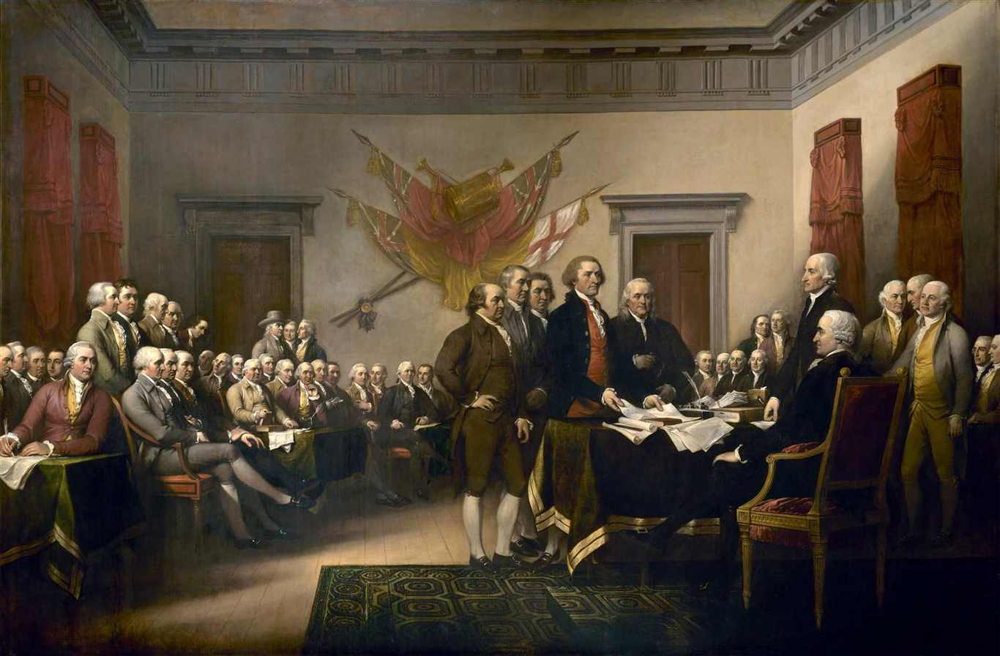
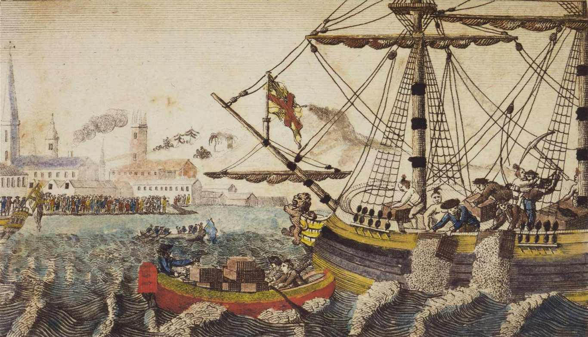

Línea del tiempo interactiva y análisis de los procesos de emancipación que
transformaron un continente.
Equipo 4 — Integrantes de esta presentación
1
David Antillón Zapata
2
Dereck Escamilla
3
Iker Carrera
4
Yakof Guiterrez
5
Mateo
6
Jorge Balderrama
Línea del tiempo de la Independencia en América Latina
Recorre los procesos de emancipación país por país en un formato claro, contrastante y listo para
exposición.
Haz clic en cada nodo o usa las flechas ← → para navegar.
Países incluidos
20 países
Rango histórico
1791 - 1898
Progreso de lectura
0/20 hitos
HISTORIADOR CHISMOSO
La Independencia de las Trece Colonias de Norteamérica (1775–1783)
En esta sección analizamos un proceso que fue clave para la historia mundial: la independencia de las Trece Colonias británicas en Norteamérica, que dieron origen a los Estados Unidos de América. Aunque este proceso ocurrió fuera de América Latina, influyó directamente en las ideas de libertad y república que después inspirarían las independencias latinoamericanas. A continuación, respondemos las seis preguntas fundamentales del historiador chismoso.

Declaración de Independencia (1776), símbolo del rompimiento político con Gran Bretaña.
¿Quién?
En la Independencia de las 13 colonias participaron, por un lado, las colonias británicas ubicadas en la costa este de América del Norte, y por el otro lado, Gran Bretaña, gobernada por el rey Jorge III. Entre los líderes más importantes estuvieron George Washington, quien dirigió el ejército colonial; Thomas Jefferson, redactor principal de la Declaración de Independencia; y Benjamin Franklin, quien consiguió apoyo de Francia. Fue un conflicto entre colonos que buscaban autonomía y una potencia que quería mantener su dominio.
¿Por qué?
La independencia ocurrió porque las colonias comenzaron a sentir que Gran Bretaña gobernaba de manera injusta. Después de una guerra contra Francia, el gobierno británico quedó endeudado y decidió imponer nuevos impuestos a las colonias. Sin embargo, los colonos no tenían representantes en el Parlamento británico, lo que significaba que no podían participar en las decisiones que los afectaban. Por eso surgió la idea de que era injusto pagar impuestos sin representación.
Además, Gran Bretaña controlaba el comercio colonial y limitaba su economía, obligándolos a vender y comprar solo productos británicos. También podía anular leyes locales y enviar tropas para mantener el orden, lo que aumentó la tensión.
A esto se sumaron las ideas de la Ilustración, que defendían que todas las personas tienen derechos naturales como la libertad y que el poder político proviene del pueblo. Si un gobierno no respeta esos derechos, el pueblo tiene derecho a cambiarlo. Poco a poco, los colonos dejaron de ver el conflicto solo como un problema económico y comenzaron a verlo como una lucha por sus derechos y su libertad.
¿Para qué?
Los colonos no luchaban únicamente para dejar de pagar impuestos. Su objetivo era mucho más grande: querían romper completamente con Gran Bretaña y formar un país independiente.
Buscaban crear un gobierno republicano, es decir, sin rey, donde el poder no estuviera concentrado en una sola persona. Querían establecer un sistema con división de poderes y representación política, donde las decisiones fueran tomadas por representantes elegidos por el pueblo.
El 4 de julio de 1776 se aprobó la Declaración de Independencia, en la que se afirmó que todos los hombres son creados iguales y que tienen derechos que ningún gobierno puede quitarles. En resumen, luchaban para construir una nación soberana basada en la libertad, la igualdad y la participación política.

Motín del Té de Boston, episodio clave en la escalada del conflicto.
¿Dónde?
El conflicto se desarrolló en las 13 colonias de la costa este de América del Norte. En Boston ocurrieron protestas importantes como el Motín del Té. En Filadelfia se firmó la Declaración de Independencia. Y en Yorktown tuvo lugar la batalla decisiva que prácticamente aseguró la victoria de los colonos.
Ubicación general del proceso en la costa este de Norteamérica.
¿Cuándo?
Las tensiones comenzaron desde la década de 1760 con la imposición de nuevos impuestos. En 1775 comenzaron los primeros enfrentamientos armados, lo que marcó el inicio formal de la guerra. En 1776 se declaró oficialmente la independencia, pero la guerra continuó durante varios años más. Finalmente, en 1783, se firmó el Tratado de París, mediante el cual Gran Bretaña reconoció la independencia de las colonias. Fue un proceso largo que duró aproximadamente ocho años de guerra.
¿Cómo?
Primero hubo protestas y boicots contra productos británicos. Después comenzaron enfrentamientos armados entre colonos y soldados británicos. Las colonias organizaron un ejército dirigido por George Washington y recibieron apoyo militar de Francia. Tras varias batallas importantes, la victoria decisiva ocurrió en Yorktown en 1781. Finalmente, en 1783, se firmó la paz y nació oficialmente una nueva nación.